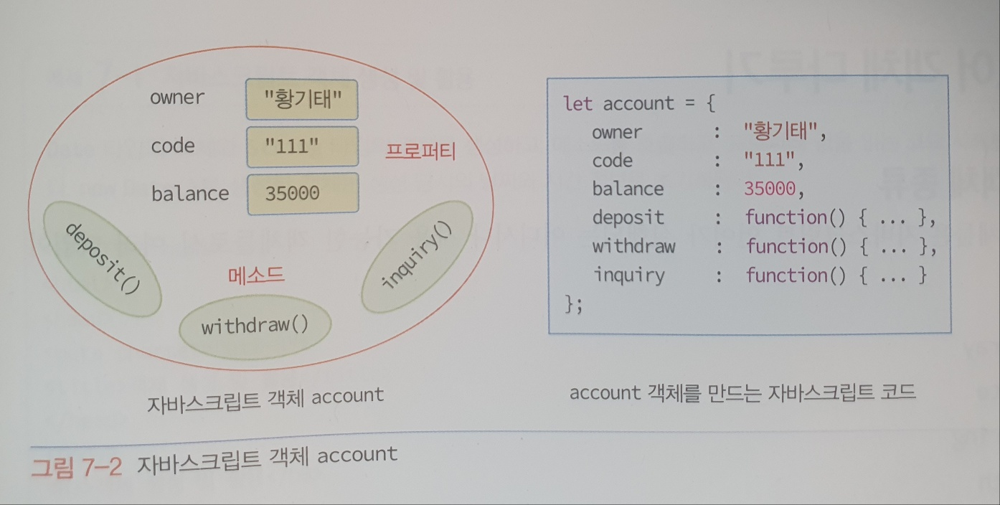

객체
실세계의 객체들을 다룰 수 있도록 JS에 객체 개념이 도입되었다.
객체의 고유한 속성을 프로퍼티라고 부르며, 객체는 여러 '프포퍼티'와 '값'의 쌍으로 표현된다.
또한 객체는 여러 개의 함수를 가질 수 있는데 함수를 메소드라고 부른다.
메소드는 다른 객체나 코드로부터 호출되며, 주로 객체 내부의 프로퍼티 값을 조작하거나 연산을 수행하고 결과를 리턴한다.

객체의 유형
개발자가 JS 코드로 객체를 만들어 사용할 수도 있지만, 부라우저는 많은 JS객체들을 만들어 제공한다.
브라우저가 제공하는 JS객체들은 다음 3가지 유형으로 나뉜다.
- 코어 객체
- HTML DOM 객체
- 브라우저 관련 객체(BOM)
코어 객체
코어 객체는 기본 객체로서 Array, Date, String, Math 타입 등이 있으며, 웹 페이지나 웹 서버 응용프로그램 어디서나 사용할 수 있다.
HTML DOM 객체
HTML 페이지에 작성된 HTML 태그들을 브라우저가 하나씩 깩체화한 것들로 HTML 페이지의 내용과 모양을 제어하기 위해 사용되는 객체들이다.
브라우저 관련 객체 (BOM)
브라우저의 종류나 스크린의 크기 정보를 제공하거나 새 윈도우를 생성하는 등 브라우저와 관련된 객체들이다.